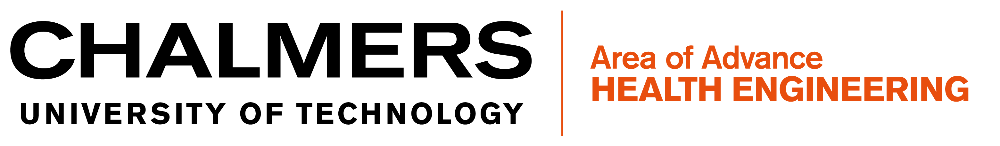
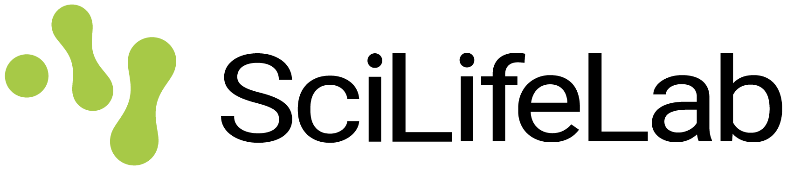
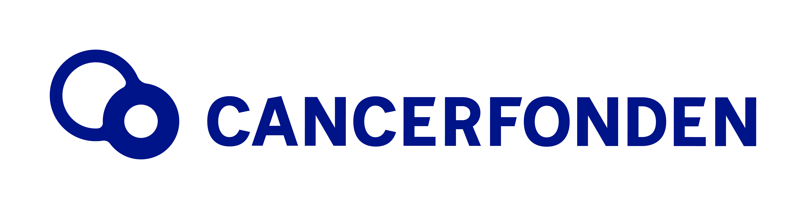

About
Metabolic diseases, including obesity, type 2 diabetes, cardiovascular disease, and some cancers, pose a major burden on public health systems, accounting for most global chronic diseases and deaths. These conditions share complex underlying pathophysiology interacting with environmental, lifestyle, and dietary factors. It is widely recognized that poor diet quality contributes substantially to these conditions, but the mechanisms by which diet influences metabolic health are not well studied. Emerging tools and technologies, including metabolomics profiling, can help elucidate mechanisms underpinning the relationship between diet and metabolic disease. In addition, integrating metabolomics with other omics data is critical to understanding interindividual differences in the metabolic response to dietary interventions. Therefore, OMICs profiling in nutritional studies can elucidate the biological role of diet composition in chronic disease etiology and expand the evidence base of dietary guidelines in the general population. Moreover, a thorough understanding of the molecular links between diet and disease risk could pave the way for precision nutrition, where dietary advice and interventions are tailored to individuals based on their health status, lifestyle factors, social-cultural factors, and genetics and other molecular phenotypes.
The goal of the First Gothenburg Precision Nutrition Forum is to bring together interdisciplinary expertise in nutritional epidemiology, high-throughput omics technologies (genomics, metabolomics, metagenomics, and proteomics), and data science and present the latest concepts and advances in precision nutrition research. The Forum will gather world-leading multi-omics and precision nutrition experts from Europe and the US, with the goal of fostering international collaboration through the Swedish cohort infrastructures and the national Data-Driven Life Science initiative (DDLS).
Organizers
- Hosted at Chalmers University of Technology, Gothenburg, Sweden
- Chalmers scientific organization: Clemens Wittenbecher & Rikard Landberg
- External scientific organization committee members: Marta Guasch-Ferré, Jordi Merino
- Head of administrative organization: Mia Gartner
Funders


